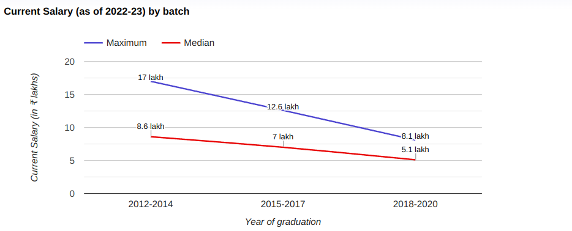

Established in 1962Sardar Patel Institute of Technology, a renowned institution of higher learningis located in Mumbai, Maharashtra. A student can pursue these 14 courses as Degree in Full Time mode. Sardar Patel Institute of Technology offers a variety of 10 UG courses. Sardar Patel Institute of Technology present collection of courses like M.E./M.Tech, MCA, B.E. / B.Tech in the specialized fields of Engineering and IT & Software. Students can choose stream and specialization of their choice. Sardar Patel Institute of Technology offers its students to gain professional expertize through its trained & experienced faculty in studies of Electronics & Communication Engineering, Computer Science Engineering, Information Technology, Electronics Engineering, Artificial Intelligence & Machine Learning. Sardar Patel Institute of Technology also has it's courses approved by prestigious approving bodies like AICTE. Overall, courses are available for an intake of 456 from the most aspiring students for higher learning. Institute offers great infrastructure with facilities like Auditorium, Cafeteria, Gym, Hospital / Medical Facilities, Hostel, Labs, Library, Sports Complex, Wi-Fi Campus, Others - Table Tennis, Seminar Hall to students. The institute's library has a collection of more than 20000 books and subscribed to National and International periodicals along with several online journals. The library has an Institutional membership of British Council Library (BCL). S.P.I.T. Library subscribed IEEE ASPP (All Society Periodicals Package). The library is also the member of ACM Digital Library. Library provides NPTEL online lectures of the eminent personality of various IITs, and there are made available to user online through Intranet.
Programs Offered:

Placement Graph :
